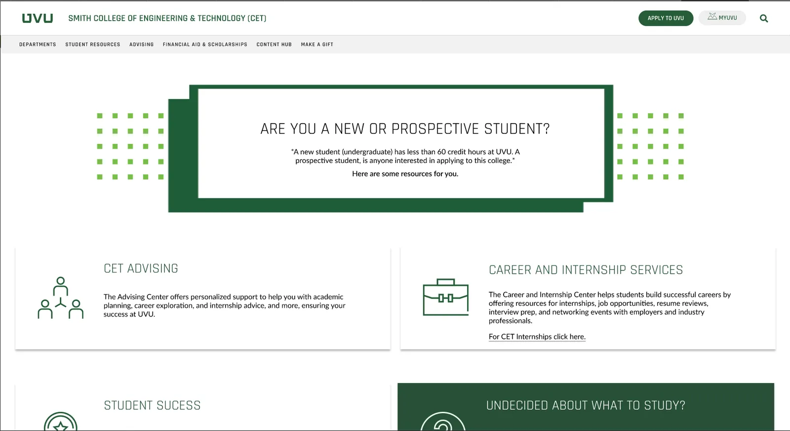

Learning Figma in Interaction Design
Introduction
When I first started learning Figma, I figured out most of its functionality from previous experience with a similar program: Procreate. Before I was a web design major, I was in an art and design related field, and I used Procreate a lot. It's very user-friendly, much like Figma, and very versatile in its user base; its functionality works for novices as well as experts. That is very similar to Figma.
Procreate and Figma have similarities but also stark differences. Procreate has an open-ended user flow that lets people design mostly with their design brain, where structure isn't important in the way web design needs structure. Figma is more structured, not in an unhelpful way, but in a way that aligns its users with its purpose: web design.
What happened
In this class, we used Figma while working on group projects, so we learned in class as well as from each other. We worked through individual web pages in our group project, the UVU CET website redesign, and through the design and iteration process. Everyone in my group had previous experience with Figma or a similar application, and that background helped, so it wasn't very hard to figure out and get the assignments done.
Weekly, Professor Dan Hatch guided us through different things we could do in Figma and through the stages of the design process: the wireframe stage, then the high-fidelity wireframe stage, the prototyping stage and the rest. It was good to have someone who knew what they were doing, so that we didn't get lost.

Conclusion
After learning all these processes and programs that semester, I came closer to my goal of being a successful UX designer and developer. I had a good mentor in Dan Hatch, and a good group to bounce ideas off of. I learned about the stages of development, and strengthened my design focus for my major.